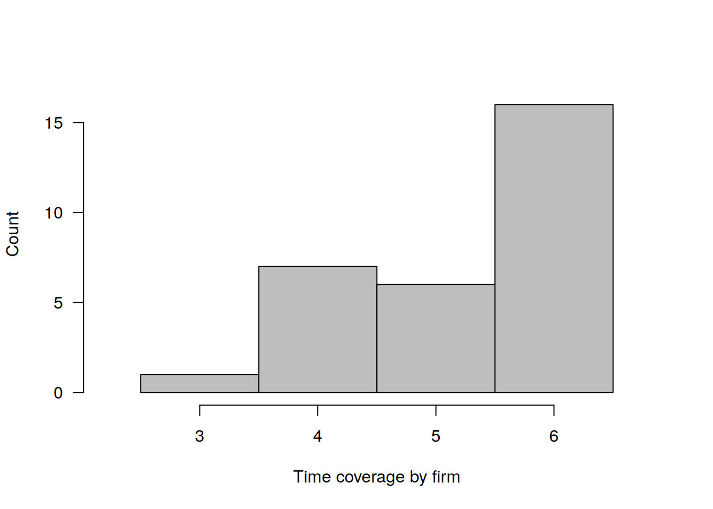
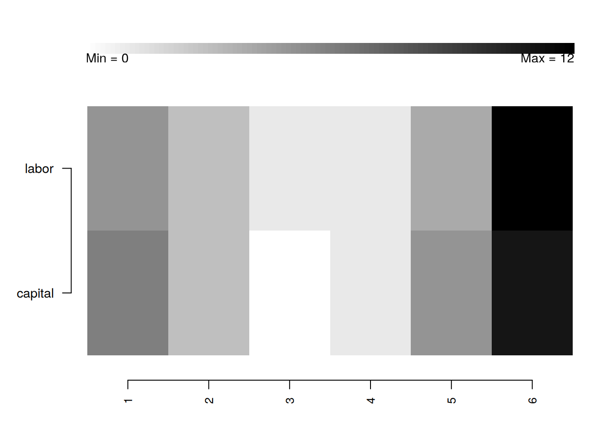
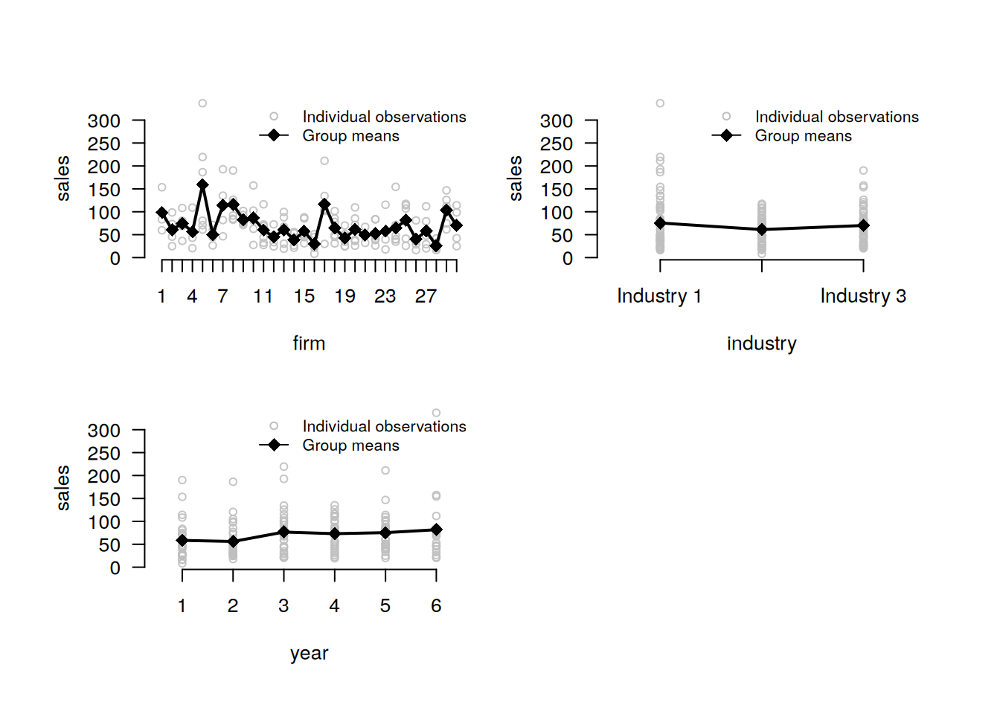

library(bamboo)5 Extended example
Typically, package functions include multiple arguments, the different values of which allow for flexible configuration. Below are various examples demonstrating the package’s customization potential.
5.1 Set up
Import the package.
5.2 Data import
Import the built-in dataset with simulated unbalanced panel data.
data(production)Set up a panel structure in advance so that you don’t have to do it later each time you use other functions. Note that if delta is supplied, the function checks for omitted time periods. If such periods exist, they will be taken into account when other functions work with this argument.
panel <- make_panel(production, index = c("firm", "year"), delta = 1)5.3 Creating balanced panel data
The make_panel() function also allows to balance panel data using various options:
- keep only entities present in all time periods;
balance_entities <- make_panel(production, index = c("firm", "year"), balance = "entities")- keep only time periods where all entities are present;
balance_periods <- make_panel(production, index = c("firm", "year"), balance = "periods")- create a row for every entity‑time combination (if
deltais supplied, the full time sequence including missing periods is used).
balance_rows <- make_panel(production, index = c("firm", "year"), delta = 1, balance = "rows")5.4 Panel data structure analysis
describe_balance(panel, detail = TRUE, digits = 2) dimension mean std min p5 p25 p50 p75 p95 max
1 entities 26.17 3.97 19 20.5 25.25 27 28.75 29.75 30
2 periods 5.23 0.94 3 4.0 4.25 6 6.00 6.00 6describe_periods(panel, digits = 2) year count share
1 1 25 0.83
2 2 28 0.93
3 3 30 1.00
4 4 29 0.97
5 5 26 0.87
6 6 19 0.63plot_periods(panel, colors = c("gray", "black"))
describe_patterns(panel, limits = 3, digits = 2) pattern 1 2 3 4 5 6 count share
1 1 1 1 1 1 1 1 16 0.53
2 2 1 1 1 1 1 0 5 0.17
3 3 1 1 1 1 0 0 3 0.10plot_patterns(panel, limits = c(4, 6), colors = c("darkgray", "white"))5.5 Missing values analysis
plot_missing(
panel,
select = c("labor", "capital"),
colors = c("black", "white")
)
summarize_missing(
panel,
select = c("labor", "capital"),
detail = TRUE,
digits = 2
) variable na_count na_share entities periods 1 2 3 4 5 6
1 labor 26 0.14 16 6 5 3 1 1 4 12
2 capital 26 0.14 17 5 6 3 0 1 5 11describe_incomplete(panel, detail = TRUE) firm na_count variables industry sales capital labor
1 23 12 4 3 3 3 3
2 21 9 4 2 3 2 2
3 1 8 4 2 2 2 2
4 2 8 4 2 2 2 2
5 6 8 4 2 2 2 2
6 7 8 4 2 2 2 2
7 12 8 4 2 2 2 2
8 26 8 4 2 2 2 2
9 25 5 4 1 1 1 2
10 30 5 4 1 2 1 1
11 4 4 4 1 1 1 1
12 13 4 4 1 1 1 1
13 17 4 4 1 1 1 1
14 29 4 4 1 1 1 1
15 8 2 2 0 0 1 1
16 3 1 1 0 0 0 1
17 10 1 1 0 0 1 0
18 14 1 1 0 1 0 0
19 24 1 1 0 0 1 05.6 Numeric variables analysis
summarize_numeric(
panel,
select = c("sales", "labor"),
group = "year",
detail = TRUE,
digits = 2
) year variable count mean std min p25 p50 p75 max
1 1 sales 25 58.49 44.59 8.32 26.36 44.74 74.58 190.10
2 1 labor 25 68.87 66.94 4.10 20.88 39.44 96.76 246.85
3 2 sales 28 56.10 37.94 17.80 31.87 40.78 73.49 186.35
4 2 labor 27 60.46 48.48 11.69 30.04 45.41 69.00 222.76
5 3 sales 30 76.66 47.57 20.58 42.90 70.74 96.91 219.51
6 3 labor 29 90.44 82.63 9.28 40.92 62.88 114.85 414.84
7 4 sales 28 73.10 33.24 19.46 46.96 72.90 99.39 135.12
8 4 labor 29 73.97 54.00 16.33 34.23 58.99 96.46 240.73
9 5 sales 24 75.40 43.09 20.16 43.47 70.76 95.08 211.09
10 5 labor 26 90.60 85.03 21.06 35.90 73.02 99.07 413.78
11 6 sales 19 81.74 73.32 20.35 41.90 67.33 85.09 336.85
12 6 labor 18 96.61 103.78 20.51 37.10 55.89 111.35 419.85plot_heterogeneity(
panel,
select = "sales",
group = c("firm", "industry", "year"),
colors = c("black", "gray")
)
decompose_numeric(
panel,
select = c("sales", "labor"),
detail = FALSE,
format = "wide",
digits = 2
) variable mean std_overall std_between std_within
1 sales 69.76 46.80 29.78 35.86
2 labor 79.33 73.69 44.02 59.565.7 Factor variables analysis
decompose_factor(panel, select = "industry", format = "long", digits = 2) variable category dimension count share
1 industry Industry 1 between 13 0.43
2 industry Industry 2 between 11 0.37
3 industry Industry 3 between 10 0.33
4 industry Industry 1 overall 63 0.40
5 industry Industry 2 overall 45 0.29
6 industry Industry 3 overall 49 0.31
7 industry Industry 1 within NA 0.92
8 industry Industry 2 within NA 0.81
9 industry Industry 3 within NA 0.92summarize_transition(panel, select = "industry", format = "long", digits = 2)23 rows with NA values in 'industry' removed. from to count share
1 Industry 1 Industry 1 50 1.00
2 Industry 1 Industry 2 0 0.00
3 Industry 1 Industry 3 0 0.00
4 Industry 2 Industry 1 2 0.05
5 Industry 2 Industry 2 34 0.92
6 Industry 2 Industry 3 1 0.03
7 Industry 3 Industry 1 0 0.00
8 Industry 3 Industry 2 1 0.03
9 Industry 3 Industry 3 39 0.98